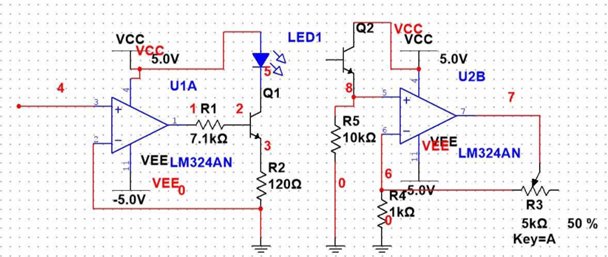
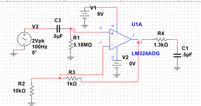

ISABELLA WATSON


UNC's biomedical engineering department is heavily based on electronics. During my junior year I built an ECG from scratch using a breadboard and lab electronics.
Operational amplifier circuits can be constructed to serve as an EKG. There are several important design considerations. These include source impedance, signal frequency, and signal size. Source impedance is an important attribute because it is important not to draw current from the input (patient). It is only important to input the voltage peaks and troughs. The frequency of the input signal is small (0-3Hz), so bandpass filters can be used to pass only these frequencies through. Problems can arise with sound distorting the signal. Further, the signal size ranges from ~10-100 μV, so a large gain is desired if any readable output is to be attained (Hubbard).
1.0 Opto-Isolation Circuit
Our design (fig 1 & 2) for the opto-isolation circuit produced a relatively clear waveform (fig 2). The only discrepancy between expected and observed results was clipping at the pulse peak. We thought this was due to insufficient power rails, and tried to rectify this by increasing the Vee and Vcc to a maximum. This did not produce a cleaner signal. Perhaps our gain was too high and exceeded the maximum allowable output for the AD623 with the given rail voltages.
Figure 1 Opto-isolation circuit.

Figure 2 Opto-isolation circuit output signal.
2.0 Signal Filtering
A 6mV 1Hz sine wave from the function generator was used to simulate a heartbeat. The filter schematic is depicted in fig 3. The filtered output was cleaner and produced the desired effects. The DC offset was eliminated, producing a signal of ~1V lesser in amplitude, as expected (with a gain of almost unity, the signal should be the op-amp output minus 1). This is, however, for a function generator input. In reality a heart signal is much messier (baseline wander, mains frequency/lighting noise, muscle noise, RF noise etc.), possibly necessitating a notch filter to first filter out the DC interference, then 60Hz mid-range interference without cutting out too much of the heart signal. Again, time constraints restricted us from building an ideal filter.

Figure 3 Schematic of the band pass filter used (rendered in Multisim). Note: The filter input signal was actually 2Vpk, 1Hz.
Figure 4 AD623 Instrumentation amplifier filtered output signal.
3.0 AD Conversion
Displaying the pulse is the final step in creating a functional EKG. Due to time constraints, we were not able to use the EKG system’s output for the DAC. Instead, we used a 5mV pk, 1Hz signal from the function generator on pulse mode to simulate a heartbeat. The concept for our LabView VI is ADC: It will take the EKG analog input and display the waveform, running peak amplitude with respect to a threshold voltage, and the BPM of the EKG signal for clinician use. Using the DAQ assistant sub-VI, data from the DAQ was acquired and set such that the maximum and minimum VI inputs were in line with our inputs. Our settings included continuous sampling (1k samples in 1kHz). The signal was then fed into a low pass filter sub-VI with a 5Hz cut off frequency, which produced a clear signal which displayed on our “EKG monitor” plot in real time. Several steps were required to provide an accurate BPM calculation and display. First, a peak detector was used. Each peak was recorded, allowing for BPM calculations based on pulse width between peaks. Each iteration is passed through the shift register into the while loop so that it be input back into the calculation to count the BPM and time passed. Finally, our amplitudes from the peak detector are implemented into an array maximum and minimum sub-VI, so that we can convert the array values to analog peak values so that we can then compare them and use that logic for our true/false Boolean for our amplitude case structure. Basically if the peak exceeds 0 and exceeds our set threshold, then the case structure allows for that peak amplitude to be displayed. This setup worked perfectly, displaying accurate BPM and waveform.
Figure 5 ADC in LabView.

Figure 6 ADC output.